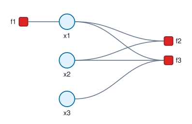

Discrete Factor Graph
A discrete factor graph represents a model with finite state variables and nonnegative factor tables. It is bipartite: variable nodes store finite state sets, factor nodes store local potentials, and edges connect each factor to the variables that appear in its table.
The full model factorizes as a product of local potentials:
\[p(\mathbf{x}) \propto \prod_i \psi_i(\mathbf{x}_{\mathcal{V}_i}).\]
In a discrete factor graph, each local potential is a nonnegative function:
\[\psi_i : \mathcal{X}_{\mathcal{V}_i} \rightarrow \mathbb{R}_{\ge 0}.\]
Here, $\mathcal{V}_i$ is the ordered collection of variables connected to factor $i$, and $\mathcal{X}_{\mathcal{V}_i}$ is the Cartesian product of their state sets. In the implementation, $\psi_i$ is stored as a factor table ordered by the variables listed in the factor constructor. Factor tables are potentials and do not need to be normalized.
Variable Nodes
Variable nodes are created with DiscreteVariable:
x1 = DiscreteVariable(:x1, 2; label = "x1", states = [:off, :on], probability = [0.7, 0.3])
x2 = DiscreteVariable(:x2, 3; label = "x2", states = ["low", "mid", "high"])
x3 = DiscreteVariable(:x3, 2; label = "x3")Identifiers and Labels
The identifier, such as :x1, is the compact programmatic reference used by factors. It can be either a Symbol or an Integer.
The label is a String used for printed output and lookup functions. Factor definitions may also refer to variables by label.
States
The second argument defines the number of states. State references can be named with the states keyword and can be integers, symbols, or strings. The state order determines the axis order in connected factor tables. In this example, factors connected to :x1 use the order [:off, :on], factors connected to :x2 use the order ["low", "mid", "high"], and factors connected to :x3 use the default order [1, 2].
Initial Belief
A variable may optionally define its own initial belief using the probability keyword. This vector must have the same length as the variable cardinality, must be finite and nonnegative, and must contain at least one positive entry.
If probability is omitted, sumproduct starts from a uniform initial message over the variable states, and minsum uses the corresponding uniform initial cost.
This initial belief is used only to initialize sumproduct messages and minsum costs. It is not a replacement for a unary factor node when the prior should be part of the probabilistic model.
Factor Nodes
Factor nodes are created with DiscreteFactor:
ψ1 = [0.8, 0.2]
f1 = DiscreteFactor(x1, ψ1; label = "f1", initialize = true)
ψ2 = [1.0 0.2 0.4; 0.1 1.1 0.3]
f2 = DiscreteFactor(x1, x2, ψ2; label = "f2")
ψ3 = cat([0.9 0.5 0.2; 0.1 0.5 0.8], [0.7 0.4 0.3; 0.3 0.6 0.7]; dims = 3)
f3 = DiscreteFactor(x1, x2, x3, ψ3; label = "f3")Variable Refs
The first arguments define the variable nodes connected to the factor node. Their order is important and must match the dimensions of the factor table. A variable can be referenced by id, such as :x1 or 1, by label, such as "x1", or by passing the DiscreteVariable node itself.
Factor Table
The factor table stores a nonnegative potential over the connected variables $\psi_i(\mathbf{x}_{\mathcal{V}_i})$. The table dimensions follow the order of the variables passed to DiscreteFactor. For a factor connected to variables with cardinalities 2 and 3, the table must have size (2, 3). In the example above, the rows of f2 are indexed by the :x1 states [:off, :on], and the columns are indexed by the :x2 states ["low", "mid", "high"].
For a factor connected to three variables with cardinalities 2, 3, and 2, the table must have size (2, 3, 2). The two matrix slices of f3 along the third dimension correspond to the :x3 states [1, 2].
Tables must be finite, nonnegative, and contain at least one positive entry. They do not need to sum to one.
Initialization from a Unary Factor
A unary factor can be marked with initialize = true. This keeps the factor as an ordinary factor in the model, but also uses its table to initialize messages on all edges incident to the connected variable.
When this is used, the initializing unary factor overrides the variable's own probability initial belief for that variable.
Only unary factors can use initialize = true, and each variable can have at most one initializing unary factor.
Constructing the Factor Graph
Use factorGraph to validate and build the factor graph:
graph = factorGraph([x1, x2, x3], [f1, f2, f3])The resulting DiscreteFactorGraph stores the validated model, edge list, and adjacency lists used for message passing.
For quick debugging, the graph structure can be rendered as a SVG with saveGraphFigure. This is useful for checking that factor-table dimensions match the intended variable connections before running inference:
saveGraphFigure("dfg.svg", graph)
The rendered SVG is interactive: hover over variables, factors, and edges to inspect summary metadata while checking the graph structure. Full discrete probability, state, and table tooltips are available through the graph figure API; see graphFigure and saveGraphFigure.
Incremental Construction
The graph can also be built incrementally. Start with an empty DiscreteFactorGraph, add variables with addVariable!, and add factors with addFactor!:
graph = DiscreteFactorGraph()
addVariable!(graph, :x1, 2; label = "x1", states = [:off, :on])
addVariable!(graph, :x2, 3; label = "x2", states = ["low", "mid", "high"])
addFactor!(graph, :x1, [0.8, 0.2]; label = "f1")
addFactor!(graph, :x1, :x2, [1.0 0.2 0.4; 0.1 1.1 0.3]; label = "f2")Both functions also accept pre-built node objects:
addVariable!(graph, DiscreteVariable(:x3, 2; label = "x3"))
addFactor!(graph, DiscreteFactor(:x3, [0.55, 0.45]; label = "f3"))Graph-only construction calls may be interleaved while the model is being assembled. If inference has already started, graph-only topology changes make existing inference objects stale. In that case, create a new inference object before running message passing again.
This style is useful when a model is assembled from data or loops. The batch style remains useful when variables and factors are naturally available as collections.
Tree Factor Graph
A tree-structured discrete factor graph is a connected discrete factor graph with no cycles. When a root variable is provided to factorGraph, the result is a TreeFactorGraph object that can run exact forward-backward sum-product message passing:
f1 = DiscreteFactor(:x1, [0.6, 0.4]; label = "f1")
f2 = DiscreteFactor(:x1, :x2, [1.0 0.2 0.4; 0.2 1.0 0.3]; label = "f2")
f3 = DiscreteFactor(:x2, :x3, [0.8 0.1; 0.1 0.8; 0.4 0.6]; label = "f3")
tree = factorGraph([x1, x2, x3], [f1, f2, f3]; root = :x1)The returned tree object stores the selected root variable, parent-edge orientation, and the forward/backward edge orders used by tree inference. The root controls message order, but not the final exact marginals after a complete sweep. The root keyword accepts the same variable references used elsewhere: ids such as :x3 or labels such as "x3".
If the graph is disconnected or cyclic, factorGraph throws an error.
If a regular DiscreteFactorGraph already exists, it can be converted explicitly:
tree = treeFactorGraph(factorGraph([x1, x2, x3], [f1, f2, f3]); root = :x1)Lookup and print helpers can be called on the tree object and delegate to the underlying DiscreteFactorGraph. Graph-only topology changes through the tree object refresh the stored tree orientation.
Updating Factor Nodes
You can update a factor's table without changing graph topology. The factor can be selected by integer index or by label:
updateFactor!(graph, "f1"; table = [0.3, 0.7], initialize = true)
updateFactor!(graph, 1; table = [0.4, 0.6])The connected variables stay fixed. The updated table size must match the old factor table size. Keywords that are omitted keep their old values, so changing factor dimensions still requires constructing a new graph.
When initialize = true is used, unary factor initialization overrides the variable's own probability initial belief and initializes the messages on all edges incident to the connected variable.
Lookup Functions
Most lookup functions accept either a variable id or a variable label:
variableIndex(graph, :x2)
variableIndex(graph, "x2")
variableDimension(graph, :x2)State lookup helpers map between state references and one-based table indices:
stateIndex(graph, :x1, :on)
stateValue(graph, :x2, 2)Factor references accept integer indices or factor labels:
factorIndex(graph, "f2")
factorIndex(graph, 2)Edges can be selected by variable, factor, or their pair:
edgeIndices(graph; variable = :x1)edgeIndex(graph; variable = :x1, factor = "f2")Inspecting the Factor Graph
The print helpers are intended for interactive inspection in the REPL.
printModel prints the model data: variable labels, ids, cardinalities, factor labels, ids, connected variables, table sizes, and initialization flags.
printGraph prints a compact table view of the graph. It shows which factors are connected to each variable, which variables are connected to each factor, and the edge ids used internally by message passing.
printEdges prints one line per edge, using the form edge_id: variable <-> factor.
Inference
After the graph is formed, the next step is to create an inference object and run discrete sum-product belief propagation. Use Iterative Discrete Belief Propagation for arbitrary discrete factor graphs, including graphs with cycles. Use Forward-Backward Discrete Belief Propagation for exact inference on tree-structured discrete factor graphs.